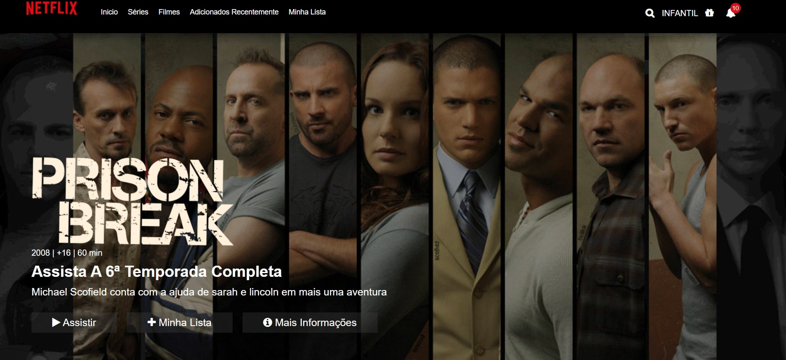
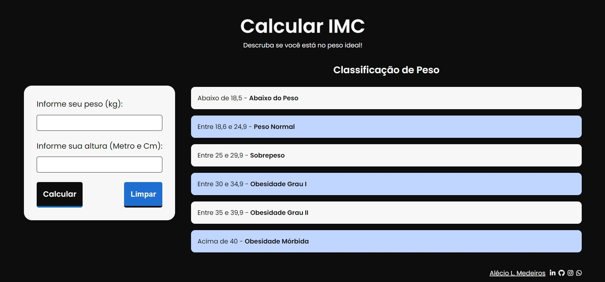
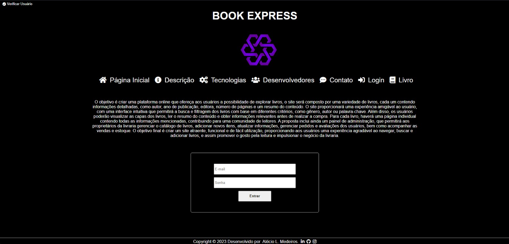
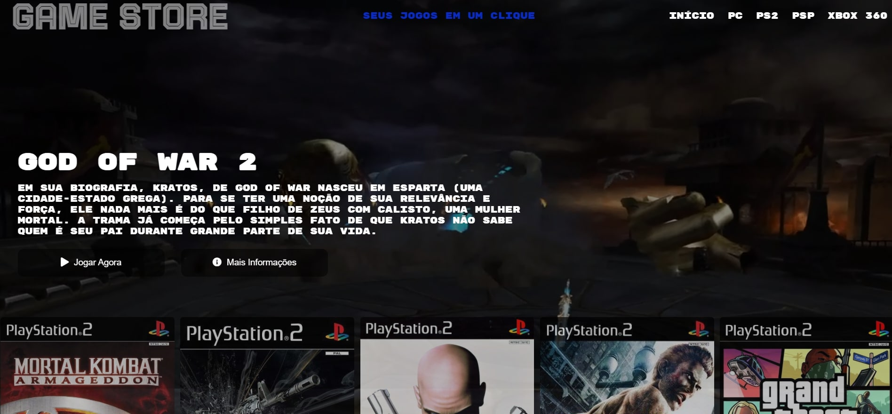
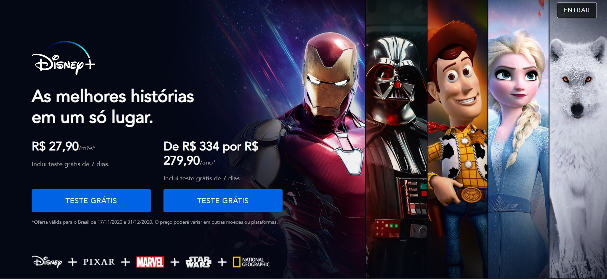

About
Engenheiro de Software
Software Engineering & Quality Assurance
Atualmente estudante de Engenharia de Software na UTFPR, atuando como Quality Assurance (QA) na Tata Consultancy Services desempenhando um papel na garantia da qualidade dos produtos e serviços de software. Com a responsabilidade de testar e verificar se as aplicações atendem aos requisitos e padrões estabelecidos, identificando erros, falhas e possíveis melhorias. Como QA, atua em testes funcionais, testes de regressão, testes de desempenho e outros tipos de testes para garantir que o software funcione corretamente em diferentes cenários, atualmente com maior foco em automação de testes. Também atua em estreita colaboração com desenvolvedores, analistas de negócios e outros membros da equipe para compreender os requisitos e garantir que os produtos estejam de acordo com as expectativas dos usuários. Além dos testes, também contribui para a melhoria contínua dos processos de desenvolvimento de software. Analisa e documenta os resultados dos testes, identifica padrões de defeitos e propõe soluções para evitar problemas futuros. Com capacidade de identificar problemas de forma proativa e propor soluções eficazes é fundamental para melhoria contínua do projeto. Como estudante de Engenharia de Software, está constantemente aprendendo e se atualizando sobre novas técnicas e ferramentas de desenvolvimento e testes, utiliza habilmente ferramentas como Cypress, Selenium, Robot, Appium, JUnit, Mockito e outras, para automatizar testes em diferentes tipos de aplicações. Com o Cypress, realiza testes automatizados em aplicações web, garantindo a integridade e o bom funcionamento dos elementos interativos presentes nas interfaces. Já com o Selenium, automatiza testes em navegadores web, executando ações e verificando se as funcionalidades estão de acordo com o esperado. Para testes em aplicações desktop, utiliza o Mockito e Robot Framework, que permite criar scripts automatizados e simular interações do usuário, verificando se o comportamento está de acordo com o planejado. E com o Appium, automatiza testes em aplicativos móveis, abrangendo diferentes plataformas como iOS e Android. Além das ferramentas de automação, Também possui conhecimento em frameworks como JUnit e TestNG, que são amplamente utilizados para realizar testes unitários em código Java, garantindo a qualidade e a correta funcionalidade das classes e métodos implementados. No contexto dos testes de API, utiliza ferramentas como Postman, Talend API Tester e Insomnia.
- Instituição: Universidade Tecnologica Federal do Paraná
- Telefone: +55 43 0000-0000
- Cidade: Londrina, BRA
- Website: https://github.com/M4deN
- Email: alexdesaran@outlook.com
- Quality Assurance: Tata Consultancy Services
GitHub Stats
GitHub Stats informações relevantes sobre o status atual, contando com um total de 42 repositórios com uma ampla variedade de projetos. Esses repositórios abrangem desde aplicações desktop até aplicações web completas e funcionais. Além dos diferentes tipos de projetos, é importante destacar que foi implementado testes automatizados abrangentes para boa parte deles. Esses testes abrangem os mais variados tipos de cenários e garantem a qualidade e a estabilidade dessas aplicações. utilizando ferramentas como Cypress, Selenium, Robot, Appium, JUnit, Mockito para realizar testes abrangentes em suas aplicações e APIs. Com essa abordagem abrangente de testes automatizados, assegurando que esses projetos estejam sempre funcionando corretamente, independentemente do tipo de aplicação ou plataforma. Isso proporciona confiabilidade e permite a qualidade desses projetos em um alto nível. Nessa seção, você encontrará informações atualizadas sobre o status do meu repositório pessoal, permitindo que demonstrando qualquer possível impacto nas atividades de desenvolvimento.
Total Commits
Repositórios
Linguagens Utilizadas
Total Estrelas
Hard Skills
Linguagens de programação e frameworks que eu mais usei desde que comecei a lidar com o mundo de desenvolvimento, pretendo aperfeiçoar ainda mais essas que sei e adquirir o conhecimento de outras possiveis, como Javascript, Java, MySQL, MongoDB, Node.js e entre outras.
Resume
Estudante de Engenharia de Software no oitavo período. Atuando na empresa Tata Consultancy Services como Quality Assurance, onde tem mais de 1 ano e 8 meses de experiência. Principal área de atuação é a automação de testes, na qual tem se dedicado e aprimorado suas habilidades. Apaixonado por garantir a qualidade de Software e utiliza suas habilidades em automação de testes para melhorar a eficiência dos processos de teste na empresa. Com visao sistemática e conhecimento na área, contribui para o desenvolvimento de produtos de alta qualidade e confiabilidade.
Sumário
Alécio L. Medeiros
Concluiu o ensino médio e logo em seguida, ingressou no mercado de trabalho, atuando em outras áreas e desenvolvendo outras atividades. Ingressou no curso de Engenharia Química na UTFPR-LON, onde cursou 4 semestres entre 2016/2018 . Durante esse período, percebeu sua paixão pelo desenvolvimento de software e decidiu redirecionar sua carreira para a área de Engenharia de Software. Com esse objetivo em mente, transferiu-se para a UTFPR-CP, onde atualmente está cursando Engenharia de Software. Essa mudança permitiu explorar sua afinidade com a tecnologia e desenvolvimento de soluções inovadoras. Com sua determinação e vontade de aprender, está comprometido em se tornar um profissional de destaque na área de Engenharia de Software.
Educação
Rotary Club & Unidade Polo
2004 - 2010
Rotary Club & Unidade Polo, Ibiporã, PR
Concluiu os estudos do ensino fundamental e médio nas escolas Carlos Augusto Guimarães Rotary Club e Unidade Polo. Durante essa fase educacional, obteve uma base sólida de conhecimentos e desenvolvendo habilidades importantes para jornada acadêmica e profissional. Essas instituições de ensino proporcionaram um ambiente de aprendizado enriquecedor. Essa experiência contribuiu para a formação integral, deixando preparado para os desafios futuros na carreira.
Engenharia de Software
2018 - 2023
Universidade Tecnologica Federal do Paraná, Cornélio Procópio, PR
Em 2018, migrou de curso e de campus iniciando uma nova jornada acadêmica ao ingressar no curso de Engenharia de Software na UTFPR-CP. Durante sua formação, adquiriu uma ampla gama de conhecimentos na área, abrangendo desde fundamentos teóricos até habilidades práticas no desenvolvimento de software. Teve a oportunidade de explorar os mais diversos aspectos da Engenharia de Software, incluindo programação, arquitetura de sistemas, gerenciamento de projetos e qualidade de software. Essa trajetória acadêmica enriquecedora proporcionou uma base sólida para enfrentar os desafios do setor e se destacar como profissional na área de Engenharia de Software.
Experiência Profissional
Desenvolvimento Freelancer
2016 - 2021
Experiência, Brasil, BRA
- Desenvolvimento Web Front-end e Back-end
- Landing Pages
- Documentação de Software
- Dashboards
- Testes Manuais
- Automação de Testes ( JUnit, Selenium, Mockito )
- Desenvolvimento Mobile (Android Studio com Java)
Quality Assurance
2021 - Present
Tata Consultancy Services - Londrina, PR
- Automação de Testes (Cypress).
- Documentação
- Melhoria Contínua
- Testes Unitários
- Testes Integração
- Testes Regressão
- Testes de API
- Branch Coverage
- Testes GUI
- Testes Usabilidade
Projects
Nesta seção estaram alguns dos trabalhos que ja realizei, todos apenas para fins de estudos todos disponiveis no meu GitHub /M4deN
Projeto desenvolvido para fins de estudos voltados a linguagen Javascript utilizando API IMDB.
Netflix
Streming & WEB
Projeto desenvolvido é uma calculadora online de IMC feito também com Javascript.
Calculadora
WEB
Projeto de uma Livraria Online back-end e front-end, API-REST CRUD completo para mercadoria e usuarios.
BOOK Express
WEB
Projeto de uma página web de Locação de games com itens amostra feito também com HTML E CSS.
Game Store
Locadora
Projeto desenvolvido para fins de estudos voltados a usando HTML E CSS.
Disney Plus
Streaming
Curriculum Vitae & Contact
Aqui você pode baixar o meu Currículo Vitae em formato PDF ou solicitar o contato de forma direta.